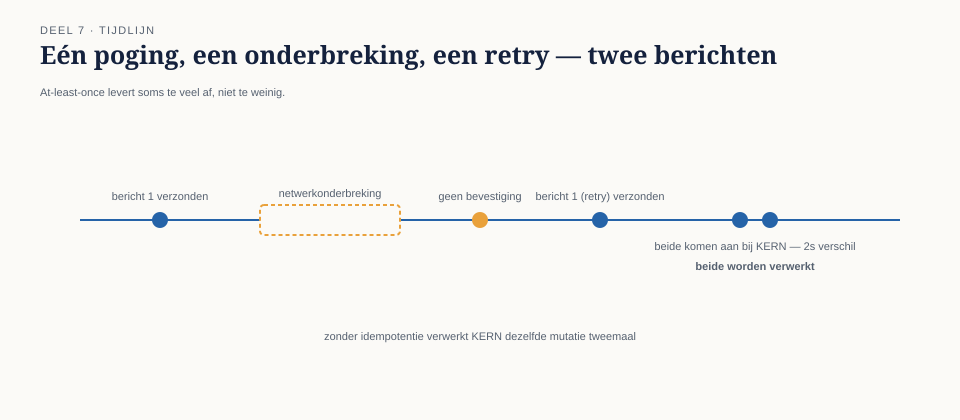
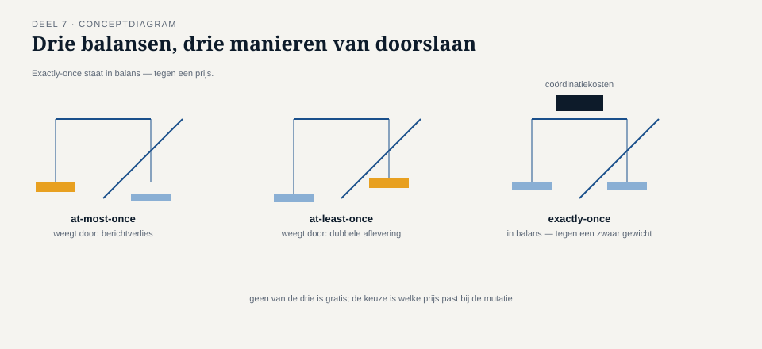

Deel 7 — Betrouwbaarheid I: garanties en idempotentie
Reader · Ductus-cursus Enterprise Integration Patterns · niveau 1 (fundament) · deel 7 van 10
7.0 De salariscorrectie die twee keer werd toegepast
Zes weken na de introductie van router en filter (deel 4) deed zich een nieuw incident voor, dit keer niet door een ontwerpfout maar door iets dat op het eerste gezicht een storing leek: een kortstondige netwerkonderbreking tussen het Werkgeversportaal en het mutatiekanaal. De verzendcomponent van het portaal kreeg geen bevestiging terug dat zijn bericht was aangekomen, en deed — precies zoals het hoorde te doen bij een uitblijvende bevestiging — een nieuwe poging. Beide pogingen kwamen uiteindelijk aan bij KERN, seconden na elkaar.
Het probleem: het ging om een salariscorrectie van €340. KERN had geen enkele manier om te herkennen dat het tweede bericht een herhaling was van het eerste, en verwerkte het simpelweg twee keer. De deelnemer kreeg een correctie van €680 in plaats van €340.
Dit incident is fundamenteel anders dan de vorige. Het portaal deed niets fout — een retry na een uitgebleven bevestiging is precies het gedrag dat je van een betrouwbaar systeem verwacht, en zonder die retry zou het bericht bij een échte storing verloren zijn gegaan. Het probleem lag aan de ontvangende kant: KERN was niet ontworpen om met de consequentie van die retry om te gaan.

Dit deel behandelt wat messaging-systemen wél en niet garanderen over aflevering, en waarom die garantie zelden is wat je écht nodig hebt — wat je nodig hebt is een garantie over verwerking, en dat is een andere vraag die je zelf moet beantwoorden.
7.1 Drie leveringsgaranties, drie prijskaartjes
Elke messaging-technologie kiest, expliciet of impliciet, één van drie fundamentele leveringsgaranties. Het is essentieel deze te kennen omdat ze verschillende consequenties hebben, en geen van drie is "gewoon beter" — elke garantie heeft een prijs.
At-most-once ("hooguit één keer"). Een bericht wordt verzonden en, als het onderweg verloren gaat, is dat definitief — er is geen retry. Dit is de garantie met het laagste risico op dubbele verwerking, maar met het hoogste risico op berichtverlies. Geschikt voor situaties waar een gemist bericht minder schadelijk is dan een dubbel verwerkt bericht, en waar hertransmissie sowieso via een ander mechanisme (bijvoorbeeld een periodieke volledige synchronisatie) wordt opgevangen.
At-least-once ("minstens één keer"). Een bericht wordt hertransmitteerd totdat een bevestiging van aankomst is ontvangen. Dit garandeert dat een bericht nooit stilzwijgend verloren gaat, ten koste van het risico dat het bericht — zoals bij Caspars salariscorrectie — meer dan één keer aankomt. Dit is de meest gangbare garantie in praktijksystemen, en precies degene die bij Meridiaan actief was.
Exactly-once ("precies één keer"). Een bericht komt gegarandeerd exact één keer aan, niet meer en niet minder. Dit klinkt als de ideale garantie, en is in de praktijk de duurste om echt waar te maken: volledige exactly-once-semantiek over onbetrouwbare netwerken vereist gedistribueerde coördinatie tussen zender, kanaal en ontvanger die aanzienlijke prestatiekosten met zich meebrengt, en veel systemen die "exactly-once" claimen, leveren in werkelijkheid een specifieke, beperktere garantie (bijvoorbeeld exactly-once binnen één technologie-ecosysteem, niet over de volle keten).
Kernzin 7 van de cursus: vraag niet "welke garantie is het beste", vraag "wat kan mijn systeem hebben — een gemist bericht, of een dubbel bericht — en bouw voor het scenario dat overblijft."

7.2 Waarom at-least-once de praktische norm is
In de meeste praktijksituaties, inclusief die van Meridiaan, is at-least-once de gekozen garantie — niet omdat het de beste garantie is in abstracte zin, maar omdat het de beste verhouding biedt tussen haalbaarheid en risico. Berichtverlies (het risico van at-most-once) is voor een financiële mutatie vrijwel nooit acceptabel: een verloren salariscorrectie betekent een deelnemer die zijn geld nooit krijgt, zonder dat iemand het merkt totdat een klacht binnenkomt. Dubbele aflevering (het risico van at-least-once) is daarentegen zichtbaar en, mits juist opgevangen, volledig beheersbaar.
Dat laatste — "mits juist opgevangen" — is de kern van dit deel. At-least-once verplaatst het probleem niet weg, het maakt het expliciet en oplosbaar: in plaats van te hopen dat berichten niet verdubbelen (onmogelijk te garanderen bij netwerkonzekerheid), bouw je een ontvanger die correct omgaat met een verdubbeld bericht. Dat mechanisme heet idempotentie.
7.3 Idempotentie: hetzelfde bericht, hetzelfde resultaat
Een verwerking is idempotent als het twee keer (of vaker) uitvoeren ervan exact hetzelfde resultaat oplevert als het één keer uitvoeren — niet "een vergelijkbaar resultaat", maar precies hetzelfde eindresultaat, zonder ongewenste bijeffecten van de herhaling.
Dit is geen eigenschap van het bericht, en ook geen eigenschap van het kanaal — het is een eigenschap die de ontvanger moet bouwen. Het bericht-ID uit deel 3 (§3.1) is hiervoor de sleutel: bij binnenkomst van een bericht controleert de ontvanger eerst of dit bericht-ID al eerder is verwerkt. Zo ja, dan wordt het bericht genegeerd (of, preciezer: het eerder berekende resultaat wordt hergebruikt, zonder de onderliggende actie opnieuw uit te voeren) — precies wat KERN had moeten doen met de tweede salariscorrectie.
Drie niveaus van idempotentie-ontwerp, van eenvoudig naar robuust:
Niveau 1: een eenvoudige verwerkingslog. De ontvanger houdt een lijst bij van reeds verwerkte bericht-ID's (met een redelijke bewaartermijn) en controleert daartegen vóór verwerking. Eenvoudig te bouwen, werkt goed zolang de controle en de daadwerkelijke verwerking niet uit elkaar kunnen vallen — bijvoorbeeld door een crash tussen "ID genoteerd" en "verwerking afgerond".
Niveau 2: idempotente operaties zelf. In plaats van (of aanvullend op) een verwerkingslog, wordt de verwerking zo ontworpen dat herhaling geen verschil maakt. "Verhoog het saldo met €340" is niet idempotent (twee keer uitvoeren = €680 verhoging); "stel het saldo in op €12.340" is dat wél (twee keer uitvoeren = zelfde eindstand). Waar mogelijk is deze vorm robuuster dan niveau 1, omdat ze niet afhankelijk is van een aparte, foutgevoelige boekhouding van bericht-ID's.
Niveau 3: idempotentie geborgd binnen dezelfde transactie. De sterkste vorm: het noteren van "dit bericht-ID is verwerkt" en de daadwerkelijke verwerking gebeuren atomair, binnen dezelfde databasetransactie, zodat een crash tussenin onmogelijk tot een inconsistente toestand leidt. Dit vereist dat de opslag van verwerkingslog en de opslag van het resultaat dezelfde transactionele grens delen — niet altijd triviaal wanneer meerdere systemen betrokken zijn, en een onderwerp dat in niveau 2 (deel 19, transactional messaging) dieper wordt behandeld.
Bij Meridiaan is voor de salariscorrectieverwerking gekozen voor een combinatie van niveau 1 (een verwerkingslog op bericht-ID) en, waar mogelijk, niveau 2: in plaats van "verhoog met €340" wordt het command herschreven naar "corrigeer naar eindbedrag X", waardoor een eventuele dubbele verwerking sowieso geen extra effect zou hebben, zelfs als de verwerkingslog om welke reden dan ook zou falen.

7.4 Idempotentie is geen vervanging voor correlatie
Een veelgemaakte begripsverwarring: idempotentie (dit deel) en correlatie (deel 2 en 3) lossen verschillende problemen op, ook al gebruiken ze allebei een identifier in de header.
Correlatie koppelt een antwoordbericht terug aan de oorspronkelijke aanvraag — het gaat over het bij elkaar houden van een vraag-en-antwoordpaar.
Idempotentie voorkomt dat hetzelfde bericht twee keer effect heeft — het gaat over het herkennen van een duplicaat van hetzelfde verzoek.
Een command message heeft in de praktijk vaak beide nodig, met twee afzonderlijke identifiers: het bericht-ID (voor idempotentie: "is dit specifieke bericht al eerder verwerkt") en de correlatie-ID (voor het antwoord: "welk verzoek hoort bij dit antwoord"). Ze kunnen soms samenvallen in eenvoudige gevallen, maar het is een denkfout om aan te nemen dat ze altijd hetzelfde zijn — bijvoorbeeld bij een retry heeft de herhaalde poging typisch hetzelfde bericht-ID (het is immers hetzelfde verzoek) maar zou, als er per ongeluk een nieuwe correlatie-ID werd gegenereerd bij elke poging, de koppeling met het eerdere antwoord alsnog verloren gaan.
Samenvatting van deel 7
- Elke messaging-technologie kiest een leveringsgarantie: at-most-once (risico op verlies), at-least-once (risico op duplicatie), exactly-once (duur, en zelden volledig waargemaakt over de volle keten).
- At-least-once is de praktische norm omdat berichtverlies vrijwel nooit acceptabel is en duplicatie, mits opgevangen, beheersbaar is.
- Idempotentie is de eigenschap die de ontvanger moet bouwen: hetzelfde bericht twee keer verwerken levert hetzelfde resultaat op als één keer.
- Drie niveaus: een verwerkingslog op bericht-ID, idempotente operaties zelf ("stel in op X" in plaats van "verhoog met X"), en atomaire borging binnen één transactie.
- Idempotentie en correlatie lossen verschillende problemen op en gebruiken bij voorkeur afzonderlijke identifiers.
Vooruitblik
Deel 8 werkt het tweede betrouwbaarheidsvraagstuk uit: volgorde. Als berichten via verschillende paden of met retries aankomen, is de volgorde van aankomst niet meer gegarandeerd gelijk aan de volgorde van verzending — en voor sommige mutaties, zoals opeenvolgende saldocorrecties, maakt die volgorde wel degelijk uit.